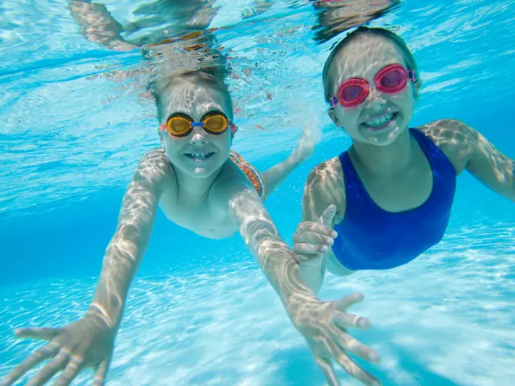
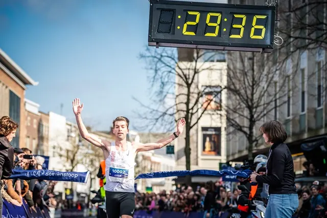
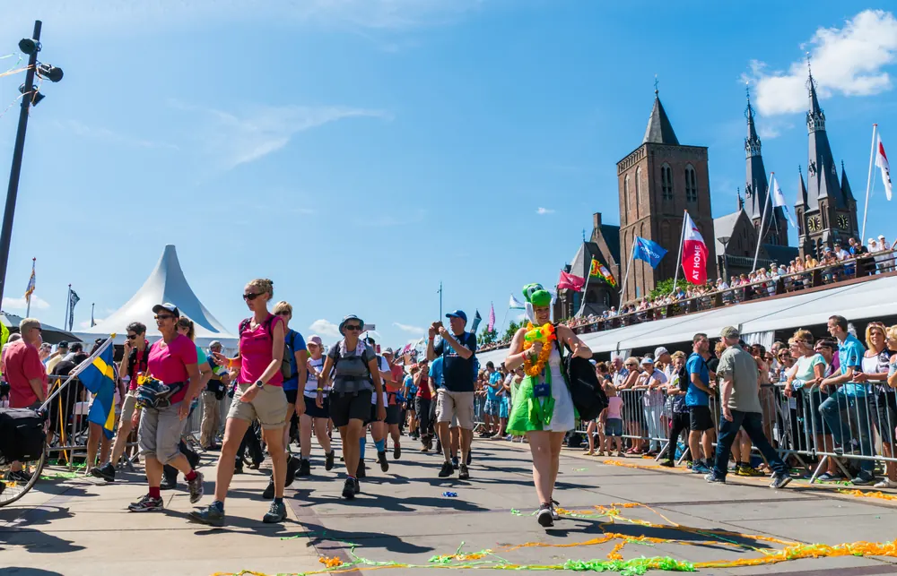
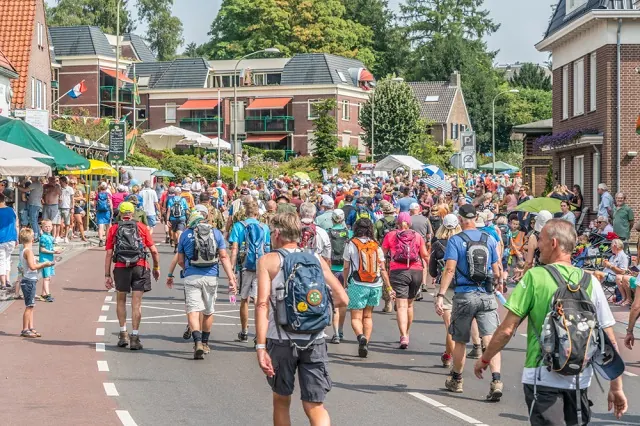
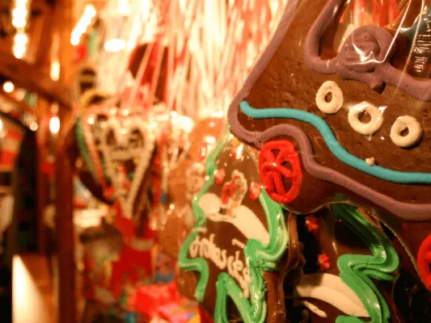
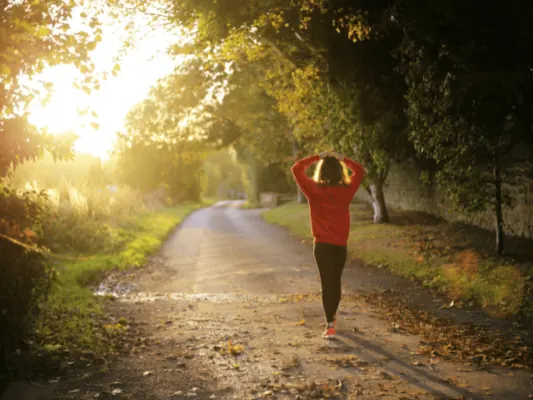
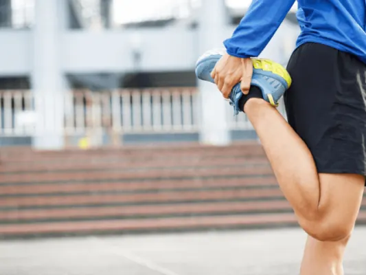
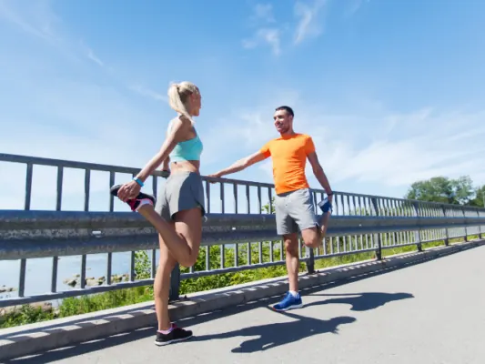
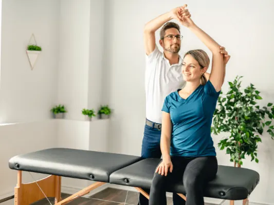

Gids
Sporten en zwemmen in Nijmegen
Bijgewerkt op
In het kort: In Nijmegen zwem je in drie overdekte zwembaden en twee buitenbaden, schaats je op de ijsbaan van Triavium en loop je de Zevenheuvelenloop, de Stevensloop of de Vierdaagse. N.E.C. speelt in het Goffertstadion. Deze gids zet zwemmen, hardlopen, schaatsen, dansen en fit blijven op een rij.
Nijmegen is een sportstad: de Zevenheuvelenloop en de Stevensloop trekken elk jaar tienduizenden lopers, de Vierdaagse is het grootste wandelevenement ter wereld en N.E.C. speelt in het Goffertstadion. Zelf bewegen kan in drie overdekte zwembaden en twee buitenbaden, op de ijsbaan van Triavium, in de heuvels en bossen rond de stad en bij tientallen sportscholen en verenigingen.
In deze gids staan de pagina's over sporten en zwemmen bij elkaar: waar je zwemt, loopt en schaatst, welke evenementen er zijn en hoe je blessures voorkomt.
Zwemmen
Overdekt zwem je in Sportfondsenbad Nijmegen-West, het Erica Terpstra Sportfondsenbad en Sportfondsenbad Dukenburg; in de zomer gaan de buitenbaden van de Goffert en Nijmegen-West open. Buiten zwem je in de Spiegelwaal, de Bisonbaai en de Mookerplas.

Zwembaden in Nijmegen
Alle zwembaden in Nijmegen op een rij: Nijmegen-West, Erica Terpstra en Dukenburg, het Goffertbad, zwemplassen in de buurt, prijzen en tips met kinderen.

Ooijpolder bij Nijmegen
Alles over de Ooijpolder bij Nijmegen: wandel- en fietsroutes, de Bisonbaai, de Duivelsberg, dieren, eten en drinken en waar je parkeert.

Over het water Nijmegen verkennen? Zo doe je dat!
Nijmegen vanaf het water ontdekken? Zo kun je de Waal op, met een sloep of bootje huren, voor een dagje uit met het gezin of een bedrijfsuitje.
Hardlopen en wandelen
De Zevenheuvelenloop (15 km, november) en de Stevensloop (halve marathon, 10 en 5 km, maart) zijn de grote loopevenementen. Trainen kan in Heumensoord, op de Mookerheide en langs de Waal. En in juli loopt de hele wereld de Vierdaagse.
De Zevenheuvelenloop
Alles over de Zevenheuvelenloop in Nijmegen: 15 november 2026, het parcours over de heuvels van Berg en Dal, de Zevenheuvelennacht en de Mini, de…

De Stevensloop in Nijmegen
De Alfa Laval Stevensloop in Nijmegen op 21 maart 2027: halve marathon, 10 en 5 km door de binnenstad en de Ooijpolder, de Stadscross, inschrijven en…

Vierdaagse 2027: data, inschrijven en routes
Nijmeegse Vierdaagse 2027 van 20 t/m 23 juli: wanneer de inschrijving opengaat, wat het kost, de afstanden, de routes per dag en hoe je je nu al…

Wandelen in Nijmegen
Wandelen in Nijmegen: stadswandelingen, het rondje over de Waal naar Veur-Lent, Heumensoord, de Mookerheide, de Ooijpolder en de Walk of Wisdom. Met…

Blessures voorkomen tijdens de voorbereiding op de Nijmeegse Vierdaagse: 7 slimme tips
Train je voor de Nijmeegse Vierdaagse? Met deze 7 tips voorkom je blessures en blaren tijdens de voorbereiding en de vier wandeldagen.
Schaatsen, dansen en voetbal
Bij Triavium in Dukenburg schaats je het hele seizoen overdekt. Dansen leer je bij een van de dansscholen in de stad, en N.E.C. speelt in het Goffertstadion, midden in het Goffertpark.

Schaatsen in Nijmegen
Schaatsen in Nijmegen doe je bij Triavium in Dukenburg: drie overdekte ijsbanen. Met prijzen voor 2026-2027, schaatsverhuur, parkeren en peuterschaatsen.
De beste dansscholen in Nijmegen
Leren dansen in Nijmegen? Overzicht van de beste dansscholen, van stijldansen en salsa tot streetdance en lessen voor kinderen.

Het Goffertstadion in Nijmegen
Het Goffertstadion van N.E.C. in Nijmegen: zo kom je er, parkeren op wedstrijddagen, station Nijmegen Goffert, de capaciteit en de geschiedenis van De…
Goffertpark Nijmegen
Alles over het Goffertpark in Nijmegen: de kinderboerderij, het openluchttheater, het Goffertbad, concerten en festivals, eten en drinken en hoe je er…
Fit blijven
Tips voor een goede warming-up, afvallen met sport en herstel bij een fysiotherapeut.

Bammmm!!!! En je bent FIT
Goede voornemens na de feestdagen? Realistische tips om weer fit te worden en het ook vol te houden, met sport, voeding en genoeg rust.

7x De Beste Warming-Up Oefeningen
Voorkom blessures met een goede warming-up. Dit zijn 7 eenvoudige oefeningen om je spieren op te warmen voor je gaat sporten.

Afvallen met sport: tips voor een kleinere maat!
Kun je afvallen door te sporten? Welke sporten het meest opleveren, hoe vaak je moet trainen en tips om het vol te houden.

Voordelen fysiotherapie: Snel herstel met een fysio
Last van pijn of een blessure? Wat fysiotherapie doet, wanneer je naar een fysio gaat en hoe het je herstel versnelt.
Andere gidsen: zien en doen
Sportscholen in Nijmegen
Heb je zelf een sportschool? Kom hier als partner te staan.
Veelgestelde vragen
Welke zwembaden heeft Nijmegen?
Drie overdekte baden: Sportfondsenbad Nijmegen-West, het Erica Terpstra Sportfondsenbad en Sportfondsenbad Dukenburg. In de zomer zijn er het openluchtbad de Goffert en het buitenbad van Nijmegen-West.
Waar kun je buiten zwemmen bij Nijmegen?
In de Spiegelwaal bij Lent, de Bisonbaai in de Ooijpolder, de Berendonck, de Groene Heuvels en de Mookerplas. Kijk voor de waterkwaliteit op zwemwater.nl.
Wanneer zijn de Zevenheuvelenloop en de Stevensloop?
De Zevenheuvelenloop is op zondag 15 november 2026, de Stevensloop op zondag 21 maart 2027.
Waar kun je schaatsen in Nijmegen?
Bij Triavium aan de Van Rosenburgweg 2 in Dukenburg, met een overdekte ringbaan van 333 meter, een funbaan en een ijshockeybaan.